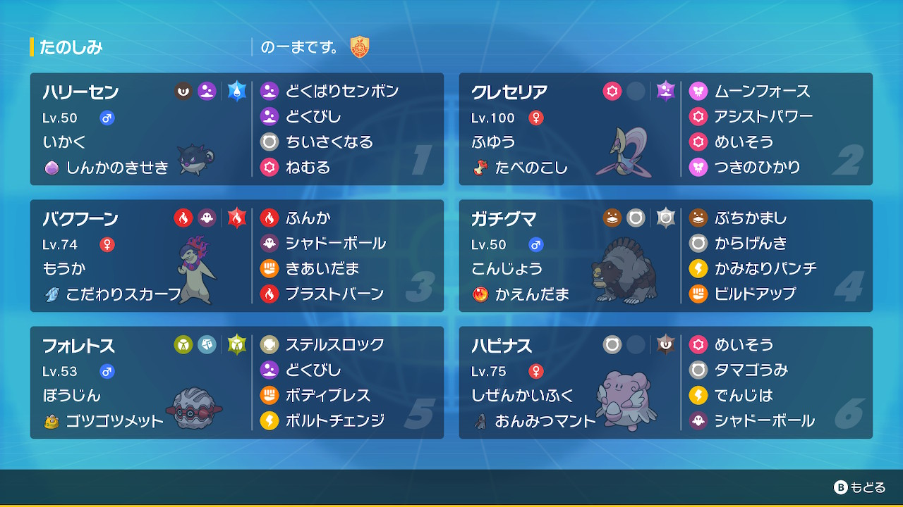

動画
パーティ画像

努力値
ハリーセン @ しんかのきせき
いかく / わんぱく
172(252)-115-117(12)-×-106(244)-105
クレセリア @ たべのこし
ふゆう / ずぶとい
227(252)-×-178(252)-95-141(4)-105
バクフーン @ こだわりスカーフ
もうか / ひかえめ
151(20)-×-98-188(252)-105-145(236)
ガチグマ @ かえんだま
こんじょう / いじっぱり
231(204)-211(252)-129(28)-×-103(20)-71(4)
フォレトス @ ゴツゴツメット
ぼうじん / のんき
182(252)-x-211(252)-80-81(4)-54
ハピナス @ おんみつマント
しぜんかいふく / おだやか
331(4)-x-62(252)-127(252)-170-75
いかく / わんぱく
172(252)-115-117(12)-×-106(244)-105
クレセリア @ たべのこし
ふゆう / ずぶとい
227(252)-×-178(252)-95-141(4)-105
バクフーン @ こだわりスカーフ
もうか / ひかえめ
151(20)-×-98-188(252)-105-145(236)
ガチグマ @ かえんだま
こんじょう / いじっぱり
231(204)-211(252)-129(28)-×-103(20)-71(4)
フォレトス @ ゴツゴツメット
ぼうじん / のんき
182(252)-x-211(252)-80-81(4)-54
ハピナス @ おんみつマント
しぜんかいふく / おだやか
331(4)-x-62(252)-127(252)-170-75